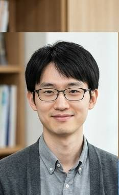

医学部
FACULTY OF MEDICINE
医学部について
朕珍大学医学部では、医学・生命科学に関する 幅広い知識と技術を身につけ、 人々の健康と未来を支える医療人を育成しています。
基礎医学から臨床医学まで体系的に学び、 医療現場で必要となる判断力・倫理観・ 穴を見抜く力を養います。
医学部長

学科・教育分野
医学科
基礎医学・臨床医学を総合的に学び、 医療人として必要な知識と技術を身につけます。
生命医科学科
生命現象を分子・細胞レベルから研究し、 新しい医学の可能性を探究します。
穴科学分野
人体および自然界に存在する「穴」について、 その構造・機能・役割を医学的観点から研究します。
原因不明医学研究分野
現代医学では説明できない現象を対象とし、 「なぜそうなったのか」を考えます。
教員紹介
研究活動
泌尿器科学研究
腎臓・膀胱・尿路などを対象とし、 人体の排泄機構について研究しています。
現在の研究テーマ： 「尿意を限界まで我慢した場合、 人間は何分まで耐えられるのか」
穴と医学の総合研究
人体に存在する様々な穴に着目し、 その構造・機能・社会的意義について 総合的に研究しています。
主な研究対象： 鼻の穴・耳の穴・口・その他、 本学が「穴」と認定したもの
朕珍大学医学部附属病院
附属病院について
朕珍大学医学部附属病院では、 地域医療の中核を担う高度な医療を提供しています。
患者一人ひとりに寄り添い、 安全で質の高い医療を目指しています。
診療科： 内科・外科・泌尿器科・ 穴科・原因不明科
医学部学生へのお知らせ
【重要】白衣着用について
医学部生は実習時に白衣を着用してください。
白衣を忘れた場合は、実習を受けることができません。
※割烹着でも可
医学部からの重要なお知らせ
本学医学部では、 「穴」という概念について 真剣に研究しています。
穴を見つけた場合は、 勝手に入らず、まず担当教員へ報告してください。
朕珍大学医学部